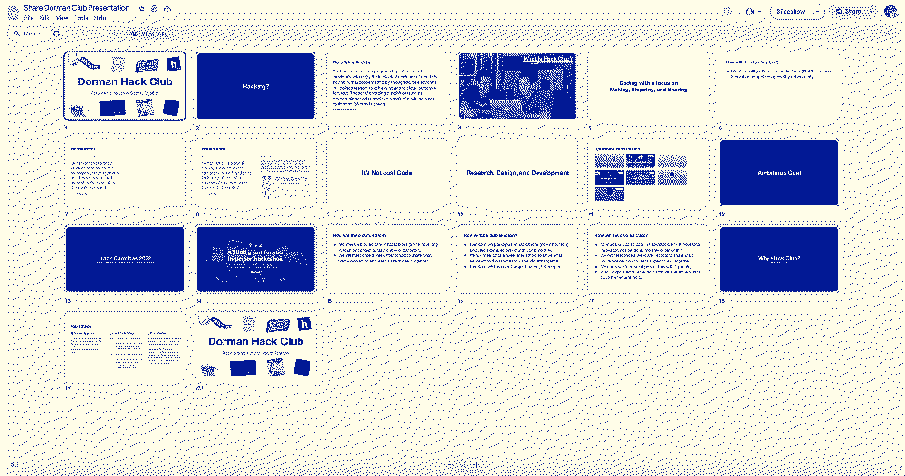
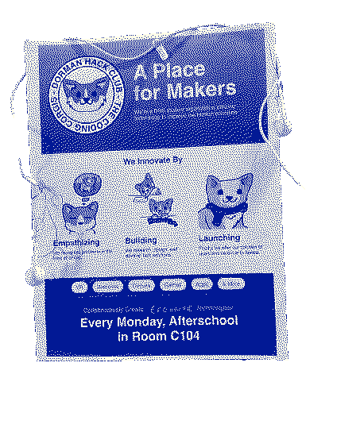
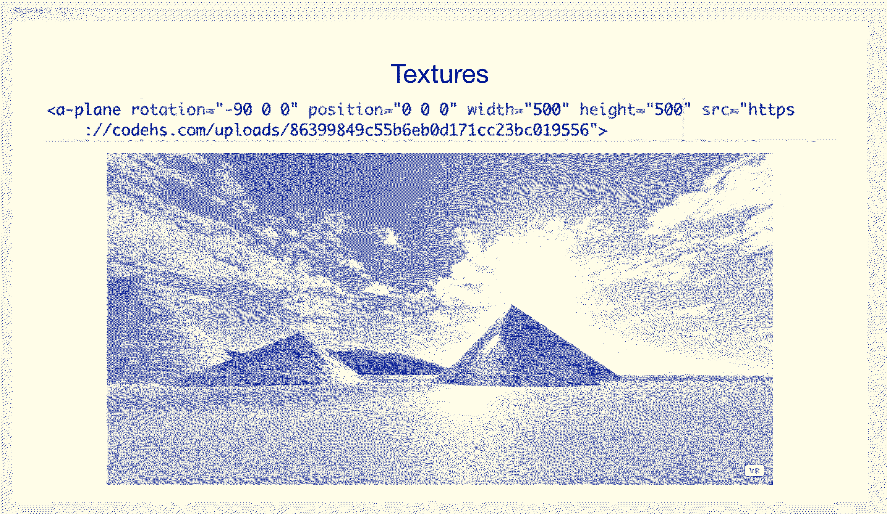

Journeys @
(2023-2024)
Home / How-I-Started-My-Hack-Club
After getting Dieter on board, the next step was to get a teacher sponsor & make it an official club at my school. Dieter & I pitched it to our CS teacher (Mrs. Danielson) & she was super supportive. The role of the teacher sponsor was just to be in the room so the school can ensure the building will not burn down. We prepped a bunch of slides to explain our Hack Club to our CS teacher:

Next... I went to the main office to get the form to start our club & learned that we needed 25 student signatures to show there was interest in the club. That same day, Dieter & I went from table to table at lunch getting people to sign saying they would like for our school to have a Hack Club. Later that day, we went to the main office with the teacher sponsor signature, 25 student signatures, and a proposal for our club. It took our principal weeks to review, but after pestering him we finally got it approved.
We started putting up a bunch of posters around our school to grow anticipation for our "hello world" launch meeting.

We had a bunch of people show up for our first meeting. Our first meeting was probably our worst meeting. At the time I was really into the "design thinking" philosophy and I took the approach of club members trying to find a problem and then the plan is we would start to design a solution for that problem. This was a horrible idea. People were coming to the club meeting to have fun, but this made it feel like work. I left the school happy that we had started but knowing that Dieter & I needed to go back to the drawing board to rethink the way we were going to lead the club.
Dieter & I came up with a new model which was basically that on Sundays we would wake up & think: "what's something really cool that we would love to build that we don't know how to build yet." We would spend all of Sunday building a sample prototype and then developing slides for it, and the following day each member of our club would make their own version with their friends in the club. We realized that people were not coming to the club meetings for the tech or because they wanted to build projects but rather because Dieter & I were super enthusiastic about the club and they thrived off that energy. Everyone in the room looks to the leader and the vibe they have will be the vibe that the attendees have too. For this reason, we based the entire club solely off of what Dieter or I were interested in that given week.
This model worked really well! One week we would be tinkering with a box of circuits that my teacher had her closet & had never used and another week we would be making VR worlds in A-Frame and then putting club members in their VR worlds in Dieter's Oculus Quest.

The club started to feel super authentic and the more that Dieter & I enjoyed the, the more the club members did too.
We had three methods for getting club members:
- Posters
- School Announcements
- Talking to people at lunch who were sitting alone